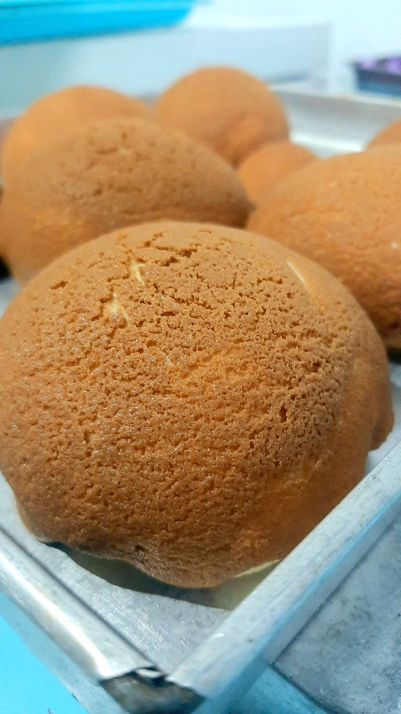
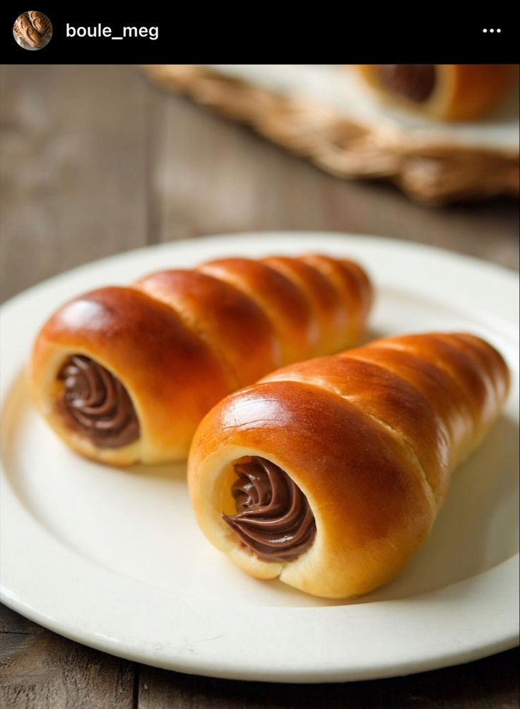
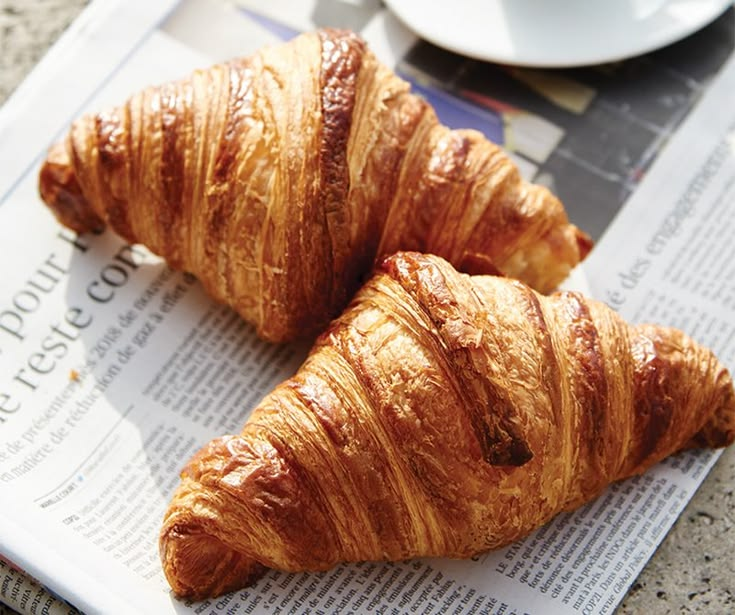

Coffee Buns
Roti manis bertekstur kontras, memadukan kelembutan roti di dalam dengan kerenyahan lapisan kopi di luar.
- Harga
- Rp 15.000
- Masa simpan
- 3–5 hari di dalam kulkas jika disimpan dalam wadah kedap udara

Roti manis bertekstur kontras, memadukan kelembutan roti di dalam dengan kerenyahan lapisan kopi di luar.

Roti manis bergaya Jepang berbentuk tanduk dengan isian krim atau selai cokelat di dalamnya.

Kue kering berlapis asal Prancis yang terkenal dengan bentuk bulan sabit.

Pastry berbentuk bulat padat, memadukan tekstur renyah berlapis khas croissant dengan isian krim lumer ala bomboloni.

Kue panggang tradisional khas Eropa, terkenal dengan bentuknya yang unik menyerupai simpul tali.